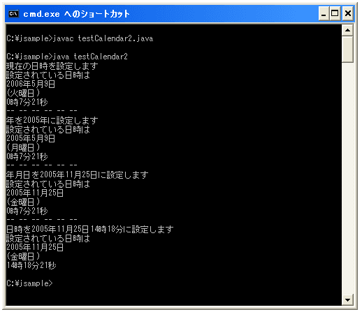

- Home ›
- Java入門 ›
- Calendarクラス
日時を設定する(set)
Calendarクラスのオブジェクトが持っている日時に関する値を変更します。使用方法の異なる4つの「set」メソッドがあります。
1番目のメソッドは、カレンダーフィールドを指定して、そのフィールドに対する値を設定します。
set public void set(int field, int value)
指定されたカレンダフィールドを指定された値に設定します。モードが厳密/非厳密であるかに関係
なく、このメソッドが値を解釈することはありません。
パラメータ:
field - 指定されたカレンダフィールド
value - 指定されたカレンダフィールドに設定する値
例外:
ArrayIndexOutOfBoundsException - 厳密性モードで、指定されたフィールドが範囲外の場合
(field < 0 || field >= FIELD_COUNT)
例えば「Calendar.YEAR」というフィールドに対して「2006」という値をセットするといった感じです。(カレンダーフィールドに関しては「日時に関する情報を取得する(get)」を参照して下さい。
Calendar calendar = Calendar.getInstance(); calendar.set(Calendar.YEAR, 2006);
※上記メソッド内で書かれている厳密か非厳密かのモードに関しては、厳密の場合は「2006/5/32」のような存在しない日付を使うと例外が発生します。非厳密の場合は「2006/5/32」は「206/5/1」の「31日後」と判断され「2005/6/1」と解釈されます。デフォルトでは非厳密になっています。
2番目のメソッドは、年月日の値を指定して、そのフィールドに対する値を設定します。
set public final void set(int year, int month, int date)
カレンダフィールド YEAR、MONTH、および DAY_OF_MONTH の値を設定します。他のカレンダフィール
ドの以前の値は保持されます。保持されないようにする場合は、最初に clear() を呼び出します。
パラメータ:
year - YEAR カレンダフィールドの設定に使用する値
month - MONTH カレンダフィールドの設定に使用する値。Month 値は 0 から始まる (1 月 は 0
になる)
date - DAY_OF_MONTH カレンダフィールドの設定に使用する値
上記メソッドでは年月日以外の値は、メソッドが実行される前の値が残っている点を注意して下さい(例えば分や秒などです)。
Calendar calendar = Calendar.getInstance(); calendar.set(2006, 4, 14);
3番目のメソッドは、年月日及び時間と分の値を指定して、そのフィールドに対する値を設定します。
set
public final void set(int year, int month, int date,
int hourOfDay, int minute)
カレンダフィールド YEAR、MONTH、DAY_OF_MONTH、HOUR_OF_DAY、およびMINUTE の値を設定します。
他のフィールドの以前の値は保持されます。保持されないようにする場合は、最初に clear() を呼
び出します。
パラメータ:
year - YEAR カレンダフィールドの設定に使用する値
month - MONTH カレンダフィールドの設定に使用する値。Month 値は 0 から始まる (1 月 は 0
になる)
date - DAY_OF_MONTH カレンダフィールドの設定に使用する値
hourOfDay - HOUR_OF_DAY カレンダフィールドの設定に使用する値
minute - MINUTE カレンダフィールドの設定に使用する値
上記メソッドでは設定対象以外の値は、メソッドが実行される前の値が残っている点を注意して下さい(例えば秒などです)。
Calendar calendar = Calendar.getInstance(); calendar.set(2006, 4, 14, 9, 24);
4番目のメソッドは、年月日及び時間、分、秒の値を指定して、そのフィールドに対する値を設定します。
set public final void set(int year, int month, int date, int hourOfDay, int minute, int second)
フィールド YEAR、MONTH、DAY_OF_MONTH、HOUR、MINUTE、および SECOND の値を設定します。他の
フィールドの以前の値は保持されます。保持されないようにする場合は、最初に clear() を呼び出
します。
パラメータ:
year - YEAR カレンダフィールドの設定に使用する値
month - MONTH カレンダフィールドの設定に使用する値。Month 値は 0 から始まる (1 月 は 0
になる)
date - DAY_OF_MONTH カレンダフィールドの設定に使用する値
hourOfDay - HOUR_OF_DAY カレンダフィールドの設定に使用する値
minute - MINUTE カレンダフィールドの設定に使用する値
second - SECOND カレンダフィールドの設定に使用する値
実際の使い方は下記のようになります。
Calendar calendar = Calendar.getInstance(); calendar.set(2006, 4, 14, 9, 24, 32);
サンプルプログラム
では実際に試してみましょう。
import java.util.Calendar;
class testCalendar2{
public static void main(String args[]){
Calendar calendar = Calendar.getInstance();
System.out.println("現在の日時を設定します");
dispCalendar(calendar);
System.out.println("-- -- -- -- -- --");
calendar.set(Calendar.YEAR, 2005);
System.out.println("年を2005年に設定します");
dispCalendar(calendar);
System.out.println("-- -- -- -- -- --");
calendar.set(2005, 10, 25);
System.out.println("年月日を2005年11月25日に設定します");
dispCalendar(calendar);
System.out.println("-- -- -- -- -- --");
calendar.set(2005, 10, 25, 14, 18);
System.out.println("日時を2005年11月25日14時18分に設定します");
dispCalendar(calendar);
}
private static void dispCalendar(Calendar calendar){
String[] week_name = {"日曜日", "月曜日", "火曜日",
"水曜日", "木曜日", "金曜日", "土曜日"};
int year = calendar.get(Calendar.YEAR);
int month = calendar.get(Calendar.MONTH) + 1;
int day = calendar.get(Calendar.DATE);
int hour = calendar.get(Calendar.HOUR_OF_DAY);
int minute = calendar.get(Calendar.MINUTE);
int second = calendar.get(Calendar.SECOND);
int week = calendar.get(Calendar.DAY_OF_WEEK) - 1;
System.out.println("設定されている日時は");
System.out.println(year + "年" + month + "月" + day + "日");
System.out.println("(" + week_name[week] + ")");
System.out.println(hour + "時" + minute + "分" + second + "秒");
}
}
上記を実際にコンパイルして実行してみると下記のようになります。

( Written by Tatsuo Ikura )

著者 / TATSUO IKURA
初心者～中級者の方を対象としたプログラミング方法や開発環境の構築の解説を行うサイトの運営を行っています。